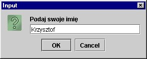
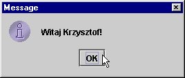
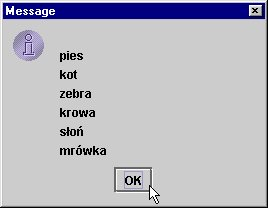

3. Praktyczne przyk³ady
Omawianie skomplikowanego tematu obiektów i referencji warto zakoñczyæ kilkoma
przyk³adami o nieco bardziej praktycznym charakterze, pokazuj±cymi jednocze¶nie,
¿e s³owo kluczowe null bardzo w programowaniu siê przydaje, a referencja
do pustego ³añcucha znakowego jest czym¶ innym ni¿ zmienna typu String, która
nie wskazuje na ¿aden obiekt.
import javax.swing.JOptionPane;
public class GreetMsg {
public static void main(String[] args) {
String name = JOptionPane.showInputDialog("Podaj swoje imiê");
if (name == null) name = "";
JOptionPane.showMessageDialog( null, "Witaj " + name + "!");
System.exit(0);
}
}
Uwidoczni on dialog wej¶ciowy, w którym bêdziemy mogli wprowadziæ tekst. Gdy po wpisaniu tekstu klikniemy "Ok", to zmienna name bêdzie wskazywaæ na napis, który wprowadzili¶my w dialogu. Je¶li natomiast zamkniemy dialog, albo klikniemy "Cancel", to wynikiem odwo³ania JOptionPane.showInputDialog(...) bêdzie null i tê w³a¶nie warto¶æ bêdzie miala zmienna name (oc oznacza, ¿e nie wskazuje na ¿aden ³añcuch znakowy). W takim przypadku przypiszemy jej referencjê do pustego ³añcucha znakowego "".  Nastêpnie odwo³anie JOptionPane.showMessageDialog(..) poka¿e komunikat z powitaniem (z podanym imieniem lub bez). Ciekawe, co by siê sta³o, gdyby usun±æ z programu instrukcjê if (...) i pozwoliæ
na to, by przy zamkniêciu dialogu przez Cancel zmienna name miala warto¶c
null. Pusty ³añcuch znakowy (nie zawieraj±cy ¿adnego znaku) jest takim samym
obiektem jak ka¿dy inny ³añcuch znakowy. Nale¿y odró¿niaæ pusty ³añcuch znakowy
(o d³ugo¶ci 0) od warto¶ci null. Zmienna typu String, która ma warto¶æ null
nie wskazuje na ¿aden obiekt. Wtedy nie mo¿emy jej u¿ywaæ do posy³ania poleceñ
do obiektu. Zmienna ta mo¿e jednak wskazywaæ na obiekt - pusty ³añcuch znakowy
i wtedy mo¿emy wobec niego stosowaæ metody (polecenia) zdefiniowane w klasie
String.

Drugi program przyk³adowy ³±czy wprowadzane w kolejno (w pêtli) pojawiaj±cych
siê dialogach teksty w taki sposób, by pokazaæ je w dialogu jako komunikat
sk³adaj±cy siê z wielu wierszy (ka¿dy wprowadzony tekst = jeden wiersz komunikatu).
import javax.swing.JOptionPane;
public class ShowStrings {
public static void main(String[] args) {
String out = "";
String inp = null;
while ( (inp = JOptionPane.showInputDialog( "Wpisz co¶" )) != null) {
if (inp.equals(""))
JOptionPane.showMessageDialog( null,
"Podaj dane lub zamknij dialog"
);
else out = out + '\n' + inp;
}
if (out.equals("")) out = "Nie wprowadzono ¿adnych danych";
JOptionPane.showMessageDialog(null, out);
System.exit(0);
}
}
Warte podkre¶lenia:
W obu programach zastosowano na koñcu odwo³anie System.exit(0). Powoduje
ono zakoñczenie dzia³ania programu (z podanym kodem wynikowym - w tym przypadku
0). Do przekszta³cania napisów na liczby ca³kowite mo¿na wykorzystaæ nastêpuj±ce odwo³anie:
liczba = Integer.parseInt(napis); gdzie: liczba - jest dowoln± zmienn± typu int, napis - jest wyra¿eniem typu String.
Oczywi¶cie, nie ka¿dy napis reprezentuje liczbê ca³kowit±. Je¶li np. w napisie
znajdzie siê znak litery lub kropka dziesiêtna, to przy próbie przekszta³cenia
napisu na liczbê ca³kowit± wyst±pi b³±d. W Javie taki b³±d sygnalizowany
jest za pomoca wyj±tku, który nazywa siê NumberFormatException.
import javax.swing.*;
public class ParseInt {
public static void main(String[] args) {
String s1 = JOptionPane.showInputDialog("Podaj pierwsz± liczbê");
String s2 = null;
if (s1 != null) {
s2 = JOptionPane.showInputDialog("Podaj drug± liczbê");
if (s2 != null) {
int l1 = Integer.parseInt(s1);
int l2 = Integer.parseInt(s2);
JOptionPane.showMessageDialog(null, "Suma: " + (l1 + l2));
}
}
System.exit(1);
}
}
Proszê wypróbowaæ powy¿szy program przy ró¿nych danych wej¶ciowych, m.in. takich które nie stanowi± napisów reprezentuj±cych liczby ca³kowite (w tym - przy pustym ³añcuchu znakowym, który zostanie wprowadzony, gdy wybierzemy w dialogu Ok, nie wpisuj±c nic do jego pola tekstowego).
|